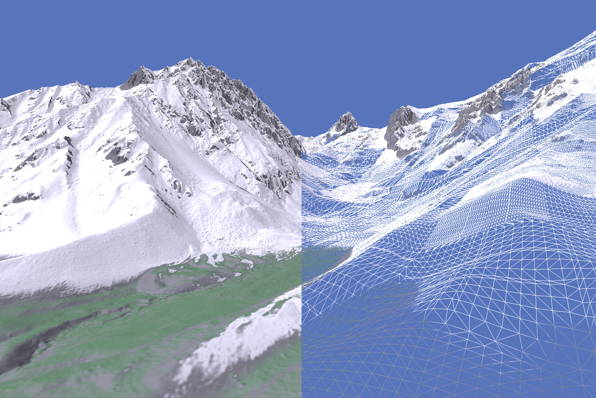

This project generates and renders plausible snow cover distributions on alpine scenery by modifying and combining existing algorithms from literature. A graphical tool is presented to visualise and create the data, able to render large scenes at high frame rates on low-end consumer hardware.
